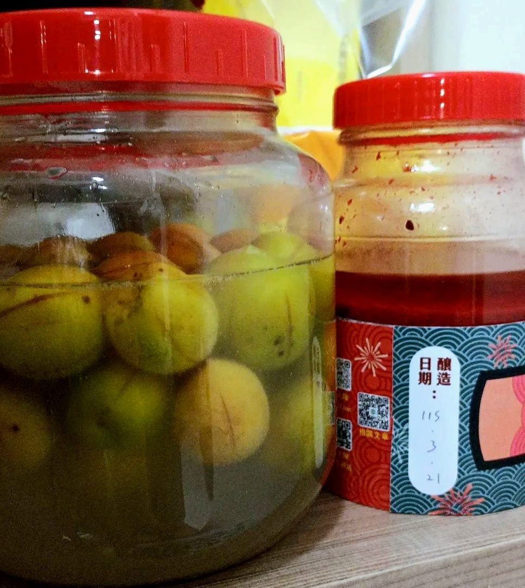
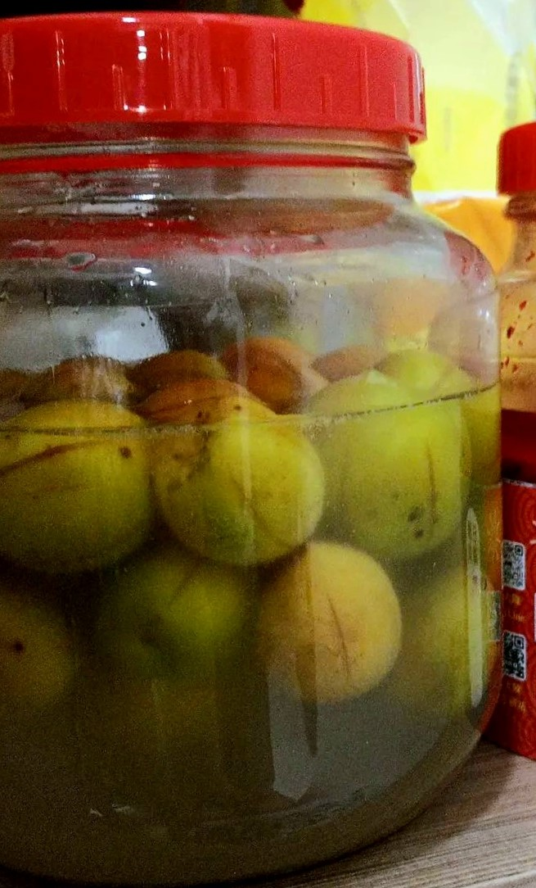
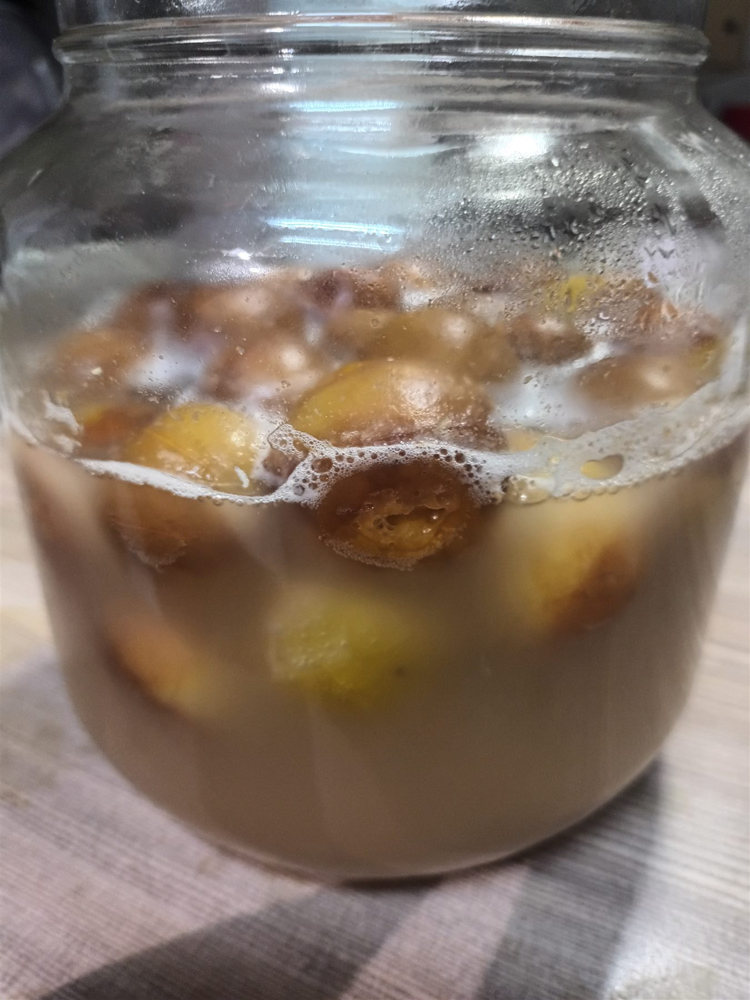

二十五天的等待，它會是一瓶「成功」的酒嗎？
味道沒有想像中驚艷，就是一杯普通的自釀梅酒。但從親自採集、釀製、裝罐，每天進行觀察與記錄，酒中似乎變得不止有梅子、砂糖和水，已經不需要用「是否成功」來判斷這罐酒。
這門課談的「風土」，常讓人聯想到某個地方獨有的氣候、土壤與味道。可是當一顆梅子離開樹枝，進入玻璃罐，再被帶回我的房間，它的地方性還留在哪裡？

01
梅子離開原來的地方
課程把釀酒安排成一段需要親身參與的練習：採集、處理材料、裝罐、觀察，最後才開封。梅子不是課本中的例子，而是一個會變色、出水、產生氣味，也可能不按計畫變化的存在。
我帶回去的不只有梅子。採集的行程、釀酒的學習與實踐、後續每日的觀察與記錄，以及我對成品的想像，都一起進入了玻璃罐。地方沒有被完整封存，卻以材料、記憶與做法的形式，繼續移動。
如果風土只是一張產地標籤，梅子離開土地後就應該失去它；
但釀造讓地方以另一種方式繼續發生。


02
房間成為發酵現場
回到住處後，我能做的事情不多：觀察、等待，偶爾靠近聞一聞。玻璃罐被放在房間裡，日常空間也因此變成一個小型發酵現場。
照片留下了肉眼可見的變化：罐壁凝結的水氣、表面的氣泡、逐漸混濁又轉為琥珀色的液體。每天看似相似，但把不同日期並排後，時間才顯露出形狀。氣味則無法被照片固定，它是酒與聞它的人共同產生的判斷，也混合了記憶、期待和比較方式。
25 DAYS OBSERVATION
酒的變化與觀察時間線
依 Day 1–Day 25 Notion 釀酒日記、釀造照片與實際裝瓶試喝經驗，標記釀造過程中的主要變化。
03
誰才是釀酒者？
如果把釀酒理解成「人把梅子製成酒」，故事裡只有一個主動者。但實際相處時，我更像是在等待許多條件共同作用：梅子的狀態、砂糖、看不見的微生物、溫度、濕度、密封程度與容器。
釀造原本是課堂中的共同活動；當每個人把玻璃罐帶回住處後，它便進入各自不同的房間、作息與照顧方式。生產不再只發生在專門的場所，而是嵌入日常生活，也讓居住空間成為風土持續形成的一部分。
這也讓「風土」不再只是土地本身。它是地方的材料與知識，也是在離開採集地後，於房間裡繼續形成的關係。課堂中的混血地理學提醒我們，人與自然並不是各自運作的兩套系統；這罐酒的變化，正是在兩者難以分開的地方發生。
04
一瓶普通的酒
Day 25，我將梅酒裝瓶並實際試喝，也確實喝到了自己等待的梅酒。味道普通，並沒有因為親手參與就自動變得特別好喝。然而，正是這個普通的結果，讓過程顯得重要。
二十五天釀酒的過程像是人類與自然的一段協商：人可以準備條件、持續觀察，卻無法單方面命令味道如何生成。
這罐酒沒有完整保存花蓮，卻保存了我在花蓮學會等待自然的方式。
那或許就是我喝到的風土。
05
梅日醺
這張酒標以課程釀造的梅酒為主題，酒名取自「每日釀」的諧音，呼應釀造過程中每天觀察、記錄酒體變化的經驗，也象徵梅子在時間累積中逐漸釀成酒的過程。
整體採用手繪水彩風格，以溫暖、柔和的色彩呈現梅酒。畫面中央以紅色水彩暈染表現黃中帶紅的梅子意象，搭配具有東方意象的黑色毛筆字寫上酒名，並特別放大「梅」字，強調酒的主角。
下方以金黃色水彩表現酒液，加入白色線稿梅子，呈現梅子浸泡於酒中、逐漸熟成的狀態。白色線稿也象徵實際釀造完成後，酒中的梅子已被取出；較低調的呈現方式，則讓畫面焦點保留在酒名上。